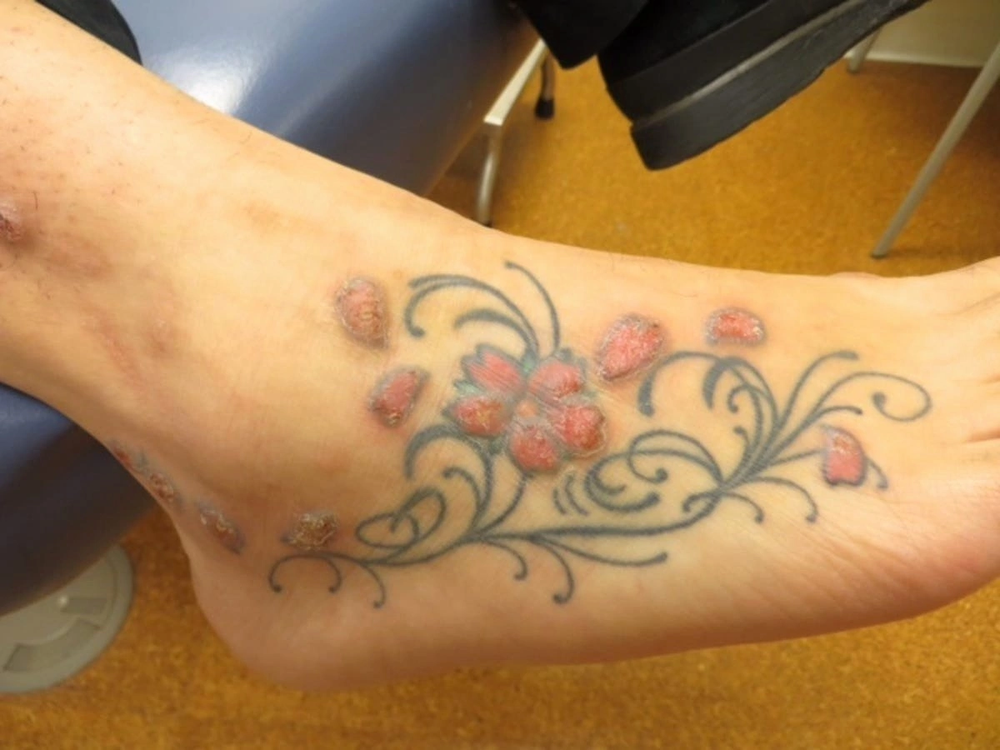
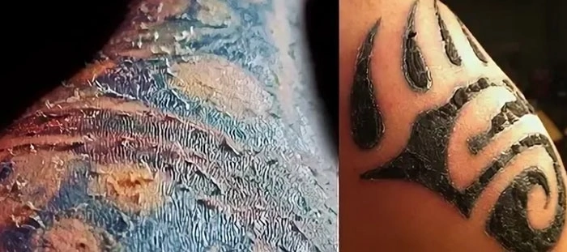
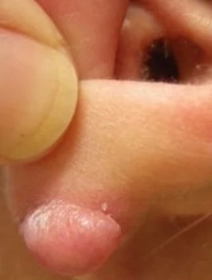
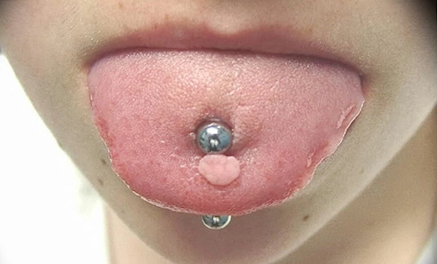

Татуировка – рисунок на кожном покрове человека, нанесенный путем введения красителей на небольшую глубину при помощи специальной машинки с миниатюрными иголочками. Изображение остается на теле до конца жизни.
Состав красок и татуировок
В состав красок входят пигменты, которые состоят из органических и неорганических веществ. Чтобы ввести твердый пигмент в кожу с помощью иглы, необходим носитель. В качестве носителя может быть использован этиловый спирт, дистиллированная вода, метанол, гамамелис, пропиленгликоль, глицерин и сорбитол. Основным компонентом краски для татуировок обычно является оксид металла, нередко это медь, железо. А чтобы твердый пигмент и носитель смешивались однородно и не расслаивались, в состав краски входят различные загустители и стабилизаторы. Цвет вещества зависит от красящего пигмента, присутствующего в составе.
Опасность татуировок
С медицинской точки зрения – считать абсолютно безопасной ни одну татуировку нельзя.
Потенциальный вред:
1.Во время нанесения татуировки можно занести тяжелые инфекционные заболевания. Такие как: ВИЧ, гепатит С и В. Данные заболевания на ранних этапах своего развития не дают никакой клинической симптоматики;
2.Воспаление и нагноение раны. Это может произойти при неправильной стерилизации инструментов. А также занесение инфекции в зону татуировки может произойти в период заживления раны. Это произойдет в случае, если пациент неправильно ухаживает за зоной татуировки;
3.Аллергическая реакция на компоненты краски;
4.Аллергия на солнце;
5.Различные болезни кожи. Например: рак кожи, псориаз и келоидные рубцы;
Также существуют противопоказания к татуировкам:
1.Постоянные: тромбоцитопения, гемофилия, ВИЧ, СПИД, гепатит, психические расстройства, эпилепсия, нарушение иммунитета, сахарный диабет 1 и 2 типа;
2.Временные: Воспалительные и аллергические заболевания кожи; простудные заболевания и повышенная температура, для женщин – период беременности, кормления грудью и во время менструации; Алкогольное и наркотическое опьянение.


Что такое пирсинг
Само слово «пирсинг» произошло от английского слова «прокалывать», что достаточно логично, учитывая принцип самой процедуры получения пирсинга.
Пирсинг являет собой декоративную модификацию человеческого тела путем прокалывания отдельных его участков.
Выбор материала сережек- один из важнейших вопросов.
Неправильно выбранный материал может вызвать аллергию вокруг пирсинга, препятствовать быстрому заживлению, окрашивать кожу и даже провоцировать инфекции в организме.
Для заживления раны подойдет гипоаллергенный титан. Он не подвержен влиянию окружающей среды и не окисляется. Не рекомендуется такие металлы как: медицинская сталь, золото, серебро, биопластик.
Опасность пирсинга
Попав в нервное окончание или сосуд при совершении прокола можно масштабно навредить организму.
Для того,чтобы этого не произошло,нужно основательно подойти к выбору места для сережки и мастеру.
Безусловно,самые опасные места для пирсинга находятся на голове,в частности, на лице.Высокий риск причинения вреда существует при прокалывании бровей и губ.Вокруг глаз очень тонкая кожа,максимальное количество сосудов и огромный риск неудачного прокола. Мало проколоть, нужно тщательно ухаживать за новым аксессуаром, дабы не занести инфекцию. Прокол брови,к примеру,может сопровождаться отечностью,покраснением и жжением.И только регулярная обработка раны поспособствует правильному заживлению.
Пирсинг губ не менее опасен.На губах также сосредоточено огромное количество нервных окончаний и сосудов.Попадание иглы в них может обернуться катастрофой.Порой пирсинг может стать огромной проблемой,приводя даже к параличу лицевых мышц.
Потенциальный вред:
1.Аллергическая реакция;
2.Заражение. Попадание бактерий и вирусов в рану;
3.Нарушение кровообращения, рубцевание ткани;
4.Эндокардит (воспаление внутренней оболочки сердца);
5.Разрушение зубов при пирсинге губ и яз.

